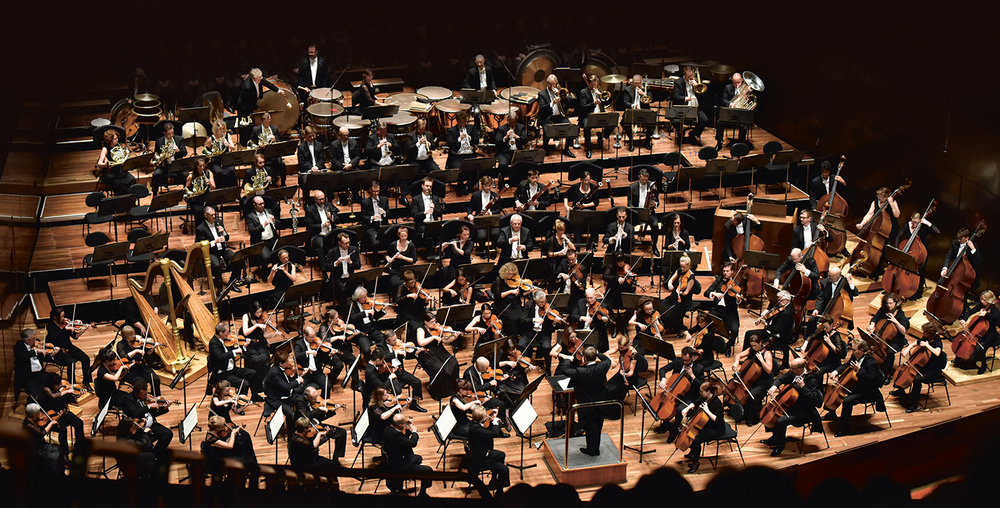
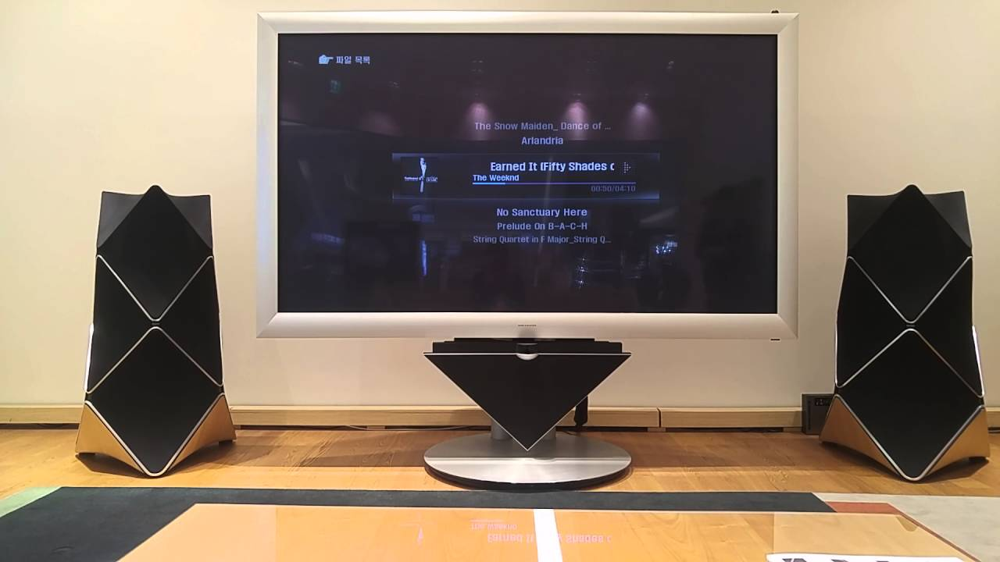
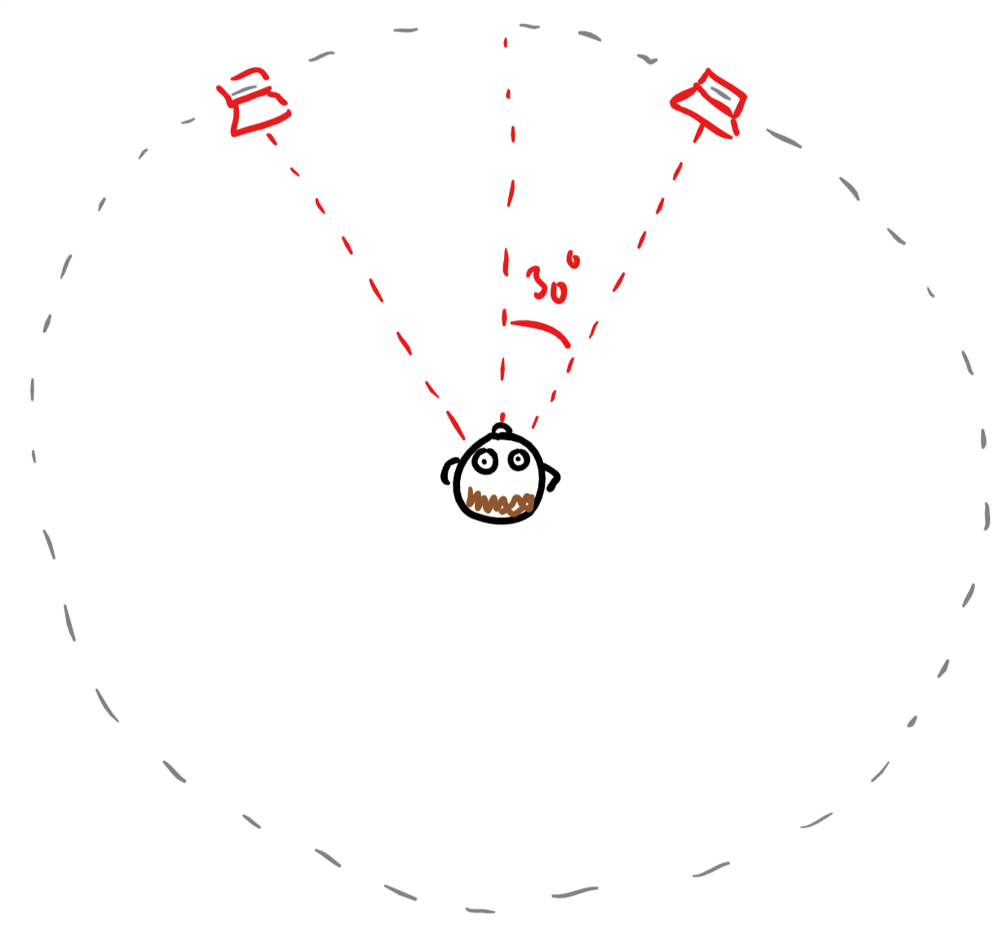
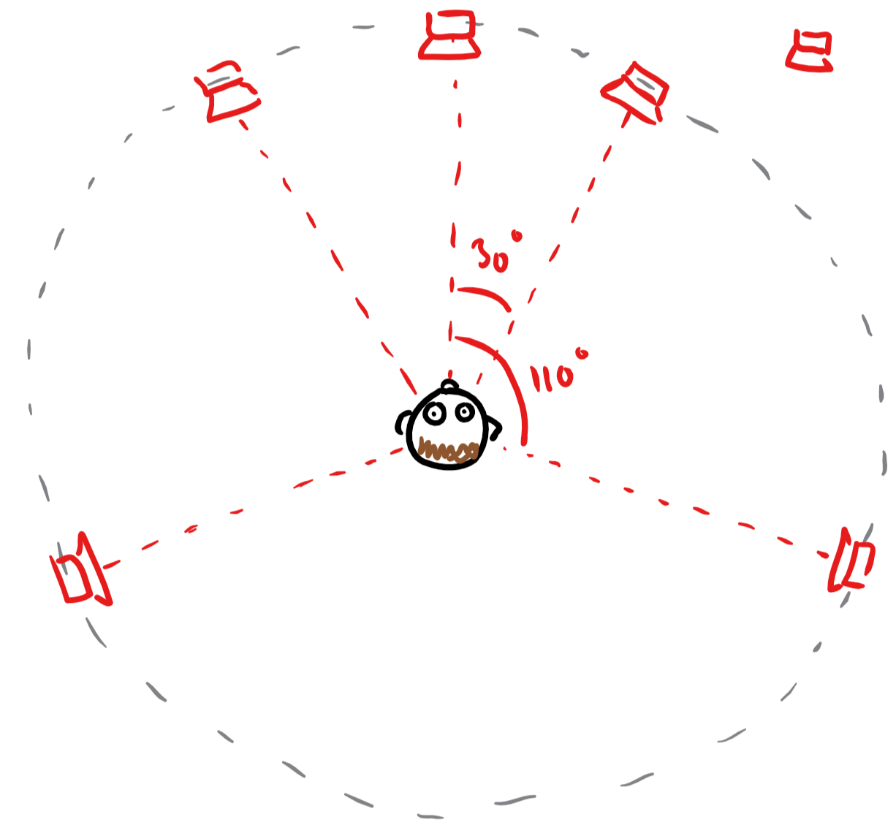
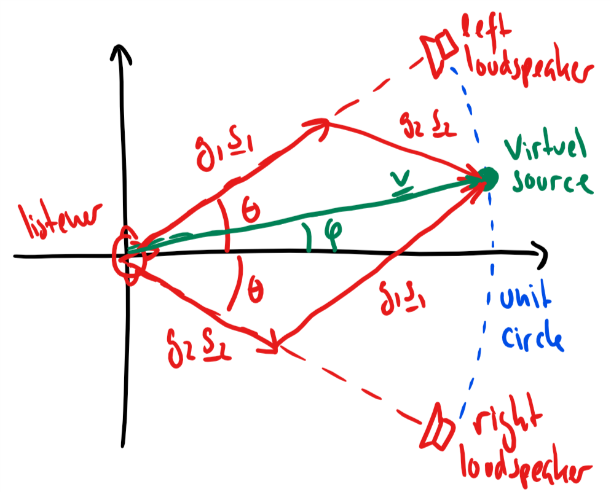

Spatial Sound Effects: Panning
1 Stereo panning techniques
In the next 20 minutes, you will learn
- what stereo is
- what the purpose of a pair of stereo loudspeakers are
- how loudspeakers can play back sources at different positions
1.1 Reproducing sound using loudspeakers
How do we make loudspeakers reproduce the sound from, e.g., a symphony orchestra?
<center>

</center>
A listener should ideally hear what the sound engineer heard in the recording studio. To do that, we have to 1. place listener in the sweet-spot 2. attenuate effects of reverberation
<center>

</center>
1.1.1 Stereo setup
Listener is placed in the sweet-spot.
<center>

</center>
1.1.2 Surround setup
Listener is placed in the sweet-spot.
<center>

</center>
1.2 Stereo panning
The recording engineer can place an audio source (e.g., a singer) in between the two loudspeakers by
- changing the amplitudes of the source (amplitude panning)
- changing the delay of the source (phase panning)
<center>
</center>
1.2.1 Amplitude panning
Assume that we wish to playback the mono signal \(x_n\) on two loudspeakers so that it sounds as if it is coming from a particular direction \(\varphi\) relative to the listener.
In amplitude panning, we can only change the amplitudes of the two loudspeaker signals
- left speaker: playing \(g_1 x_n\)
- right speaker: playing \(g_2 x_n\)
How do we choose \(g_1\) and \(g_2\)?
Many different solutions available (see the book), but we will here describe a particular case of the tangent panning law.
<center>

</center>
From the figure, we have that
\begin{align} g_1\boldsymbol{s}_1 &= g_1\begin{bmatrix} \cos(\theta)\\ \sin(\theta) \end{bmatrix}\\ g_2\boldsymbol{s}_2 &= g_2\begin{bmatrix} \cos(\theta)\\ -\sin(\theta) \end{bmatrix}\\ \boldsymbol{v} &= \begin{bmatrix} \cos(\varphi)\\ \sin(\varphi) \end{bmatrix} \end{align}By setting \(\boldsymbol{v} = g_1\boldsymbol{s}_1+g_2\boldsymbol{s}_2\), we obtain the two equations
\begin{align} \cos(\varphi) &= (g_1+g_2)\cos(\theta)\\ \sin(\varphi) &= (g_1-g_2)\sin(\theta) \end{align}which have the solution
\begin{align} g_1 &= \frac{\cos(\varphi)}{2\cos(\theta)}+\frac{\sin(\varphi)}{2\sin(\theta)}\\ g_2 &= \frac{\cos(\varphi)}{2\cos(\theta)}-\frac{\sin(\varphi)}{2\sin(\theta)}\ . \end{align}Note that we obtain the tangent panning law if we divide the second equation from the top with the first equation from the top.
# %matplotlib inline import numpy as np import matplotlib.pyplot as plt import scipy.io.wavfile as wave import IPython.display as ipd def stereoTangentPanning(inputSignal, loudspeakerAngle, virtualSourceAngle): c = np.cos(virtualSourceAngle)/(2*np.cos(loudspeakerAngle)) s = np.sin(virtualSourceAngle)/(2*np.sin(loudspeakerAngle)) leftSpeakerSignal = (c+s)*inputSignal rightSpeakerSignal = (c-s)*inputSignal return leftSpeakerSignal, rightSpeakerSignal
samplingFreq, guitarSignal = wave.read('data/guitar.wav') guitarSignal = guitarSignal/2**15 # normalise # perform stereo panning loudspeakerAngle = 30*np.pi/180 # radians virtualSourceAngle = 0*np.pi/180 # radians leftSpeakerSignal, rightSpeakerSignal = stereoTangentPanning(guitarSignal, loudspeakerAngle, virtualSourceAngle) ipd.Audio([leftSpeakerSignal, rightSpeakerSignal], rate=samplingFreq)
# linear panning from right to left nData = np.size(guitarSignal) virtualSourceAngles = np.arange(nData)*2*loudspeakerAngle/nData-loudspeakerAngle leftSpeakerSignal, rightSpeakerSignal = stereoTangentPanning(guitarSignal, loudspeakerAngle, virtualSourceAngles) ipd.Audio([leftSpeakerSignal, rightSpeakerSignal], rate=samplingFreq)
Other amplitude panning techniques exist (see the book):
- The sine panning law
- The tangent panning law with additional constraints
Note that we can also delay the signals in the loudspeaker to make them appear closer or farther away. This is called phase panning.
1.3 Summary
- We can make a set of stereo loudspeakers reproduce sound sources placed between and behind the loudspeakers by
- amplitude panning: change the gains of the source when played back by the two loudspeakers
- phase panning: change the delays of the source when played back by the two loudspeakers